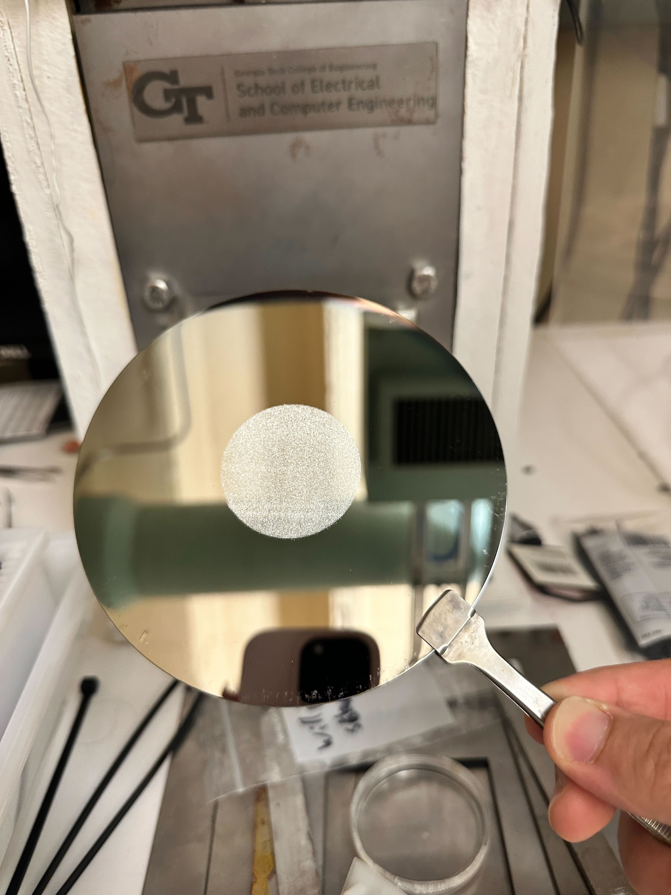

Solar Cells
GSTE is a program at Georgia Tech where students, especially those from ECE backgrounds, learn
about solar cells and how they are created. Afterwards, students are then divided into one of 3
groups: Simulations, Doping, and Screen Printing.
I was a part of the screen printing process but I'll go over the other processes as well.
Simulations
The results of the simulation
In our lab, we utilize the ATHENA (SUPREM) simulations within the DeckBuild software to model and predict semiconductor characteristics. DeckBuild employs a custom scripting language that enables us to precisely control the simulation parameters. This scripting language allows us to specify details such as gradually heating the wafer in the presence of oxygen gas, defining the type of silicon material, and other critical conditions that replicate real-world processing steps.
The simulation results provide valuable insights into the theoretical characteristics and expected performance of our semiconductor devices. For instance, the simulations enable us to calculate the expected junction depth, which is a challenging measurement to perform physically. By simulating the junction depth, we gain a reliable estimate of how our cells should function, helping us to fine-tune the doping and fabrication processes before actual production. This predictive capability makes simulation an essential step in optimizing device performance and guiding experimental efforts.
Doping
Silicon Wafer used to test oven temperature
The doping process in our lab involves adding impurities to a semiconductor material to modify
its electrical properties. Doping is essential in semiconductor fabrication as it introduces
controlled amounts of specific elements to create areas with excess electrons (n-type) or
"holes" (p-type), which are crucial for establishing conductive pathways and forming PN junctions in devices.
Our Team's Doping Process
-
Starting Material:
- We begin with a boron-doped, P-type silicon wafer, which is pre-doped to provide the foundational P-type layer.
-
Phosphorus Layer Deposition:
- A solid-state phosphorus source, combined with oxygen, is used to create a thin layer of phosphorus on the wafer surface.
- This process takes place in a high-temperature furnace, where annealing enables the phosphorus atoms to diffuse into the silicon wafer, forming an n-type region on the surface.
-
Characterization:
- After doping, the wafer undergoes characterization to ensure the phosphorus layer is deposited correctly.
- A four-point probe is used to measure sheet resistance, providing an indirect measure of phosphorus concentration and uniformity.
- We will compare our method to an approach that Dr. Paik might use, specifically focusing on junction depth characterization. We'll consult with Dr. Paik to better understand his techniques and insights on junction depth.
-
Etching Process:
- To isolate the PN junction to one side of the wafer, we etch away excess phosphorus from the back and sides of the wafer.
- A protective blue film is applied to one side of the wafer to shield it during the etching.
- The etching process includes an HF (hydrofluoric acid) bath, which effectively removes the unwanted phosphorus regions.
- The entire wafer, with the protective film, is immersed in the acid bath to achieve this selective etching, leaving the desired PN junction on only one side of the wafer.
Screen Printing

Doped Silicon Wafer with the aluminum screen applied
Screen printing is an essential process in our lab for creating conductive pathways on solar cells.
This technique involves applying aluminum and silver pastes to the silicon wafer, forming the
necessary bus bars and fingers that allow for efficient electron flow. To start, I gather all
required materials, including safety equipment like gloves, apron, goggles, and a mask, along with
Tex wipes, screens, isopropanol, and a nitrogen gun. Preparing the equipment ensures that the
workspace is safe and ready for precise application of materials. I also preheat the smaller oven
to 200°C and activate the vacuum lines, setting up the environment for screen printing.
The aluminum screen
The process begins with the aluminum layer. We carefully place the wafer on the screen printer,
secure it with the vacuum, and position the aluminum screen above it. Adjusting the screen height
creates a small gap, allowing controlled application. I then place the aluminum paste onto the
screen and, using a squeegee, move the paste firmly across the screen's openings several times to
achieve an even layer. Once printed, I release the vacuum, handle the wafer with tongs, and place
it in the furnace for curing, allowing it to set for two minutes. After curing, I clean the aluminum
screen and tools with isopropanol and a nitrogen gun to ensure everything is ready for the next stage.
The silver screen
Next, I prepare for the silver layer. I reposition the wafer on the screen printer, this time on the
opposite side, and secure it with the vacuum. The silver screen, aligned with the designated bus bars
and fingers, is placed over the wafer, and I apply the silver paste in the same way, using the
squeegee for even distribution. After printing, I cure the silver layer in the furnace for one
minute. Optionally, I examine both layers under a microscope to check for consistency and measure
the thickness, ensuring they meet specifications.
The final step involves annealing the solar cell in the right furnace, where it undergoes a precise
heat treatment to enhance the electrical properties of the printed layers. This annealing step is
critical for creating a stable and efficient PN junction, setting up the cell for optimal performance.
Once finished, I complete the process by cleaning the silver screen and tools to maintain the equipment
for future use. This controlled, multi-step procedure is vital for producing high-quality solar cells
with reliable conductive paths.
Applying aluminum paste onto the silicon wafer using the screen
The silicon wafer after screen print
The aluminum side after drying for two minute at 200°C
❮
❯
Successes and Failures
-
Successes:
- Learned how solar panels (and in turn diodes) work and are manufactured.
- Refined the doping and screen printing process with the resources that were available.
- Successfully validated the aluminum screen printing process (right up to the firing process).
-
Failures:
- Due to the lack of resources necessary to dope the wafers in the process that we wanted (p-doped, not n-doped), we weren't able to get any doped wafers.
- For the screen printing process, the oven was broken and took a while for it to be fixed.
- We could have started sooner but it took a while for the team to gather together.
Skills Gained
-
Screen Printing:
- Screen printing is one method of laying down a conductive pattern onto the wafer to make it useful.
- Is a cheaper method compare to lithography, which is used to create processors, but have similar ideas.
-
Simulation:
- Refining the process through simulation before testing it in real life.
-
Fundamentals of Diodes:
- Solar Cells are a type of diode
- The process of creating them (and the way they work) is very similar to every other diodes used.
-
Testing:
- Coming up with characteristics that we know we want to test (like the junction depth after doping).
- Figuring out how we can test it (asking processors/professionals for help when we need it).
- Figuring out if we have the means to test desired characteristics, if not, how else can we test it?
Final Thoughts
While it's a bit disappointing that we weren't able to develop a solar cell, I'm really glad that we were able to
develop a really good understanding of how solar cells and diodes work and how they are created. Furthermore, I
was able to learn and refine the process for screen printing, which is a good hands on way of understanding
more advanced processes like lithography. Also, I was introduced to how simulations can help to better understand
processes before committing resources to developing it. All in all, I had a really fun time with this project and
would love to continue if given the opportunity.